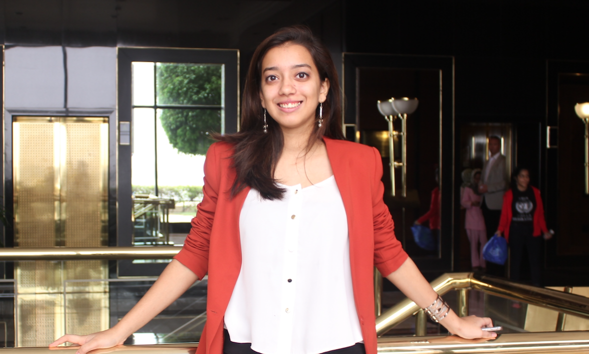

Note from the founder:
Hi. I am Ana, a 17 year old girl, with a big smile, brave heart, and strong will to help the world, by achieving my ultimate dream of working at the United Nations!
But first, I had to help my student community.
And this is why I founded Formal Whispers.
Formal Whispers is a website which provides a forum for frequently asked questions. It is a place where correct information is equally provided to everyone, and a place where whispers in the corridor are formally put down for everyone to benefit from.
The impetus to the idea:
It was in my school bus the other day (Route S-2), that I heard a young boy say -I heard if you take Physics in the 11th and 12th, you can get into any college of your choice, even if you fail it!-
I was appalled by the misunderstanding of this boy, and explained to him the errors in his judgement. By the end of that half hour bus ride, I explained to him that it is more important to do what you like, and be good at it, than to risk your school life taking a subject under this false hope that it will get you into any college. It was by chance that I had the opportunity to speak to this boy, and this made me realise that similarly, there are so many other students who have such misunderstandings, and possibly no way to rectify them, because they believe it to be true!
A few who are friendly with seniors have the opportunity to ask them, but not all. Hence, this website provides an opportunity for every student to have equal access to correct information.
This website extends to the social dilemmas we also face in our everyday lives, and friend circles, with the simple aim of trying to make high school a memorable experience for everyone.
So be sure to check out our progress so far, under the Articles tab, and ask any question of your choice!
Happy viewing!
If you have any personal queries or suggestions, you can contact me at : anaashishrath@gmail.com . We are open to improvement!
- Ana Rath,
Founder,
Formal Whispers
